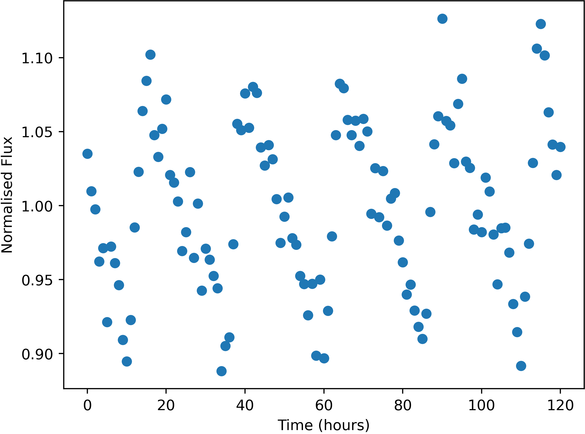

Some stars in the sky were found to change in apparent brightness over time, usually following a periodic trend.

Example of a variable star lightcurve - star FrontS110298
Units of the variable data are:
Uncertainties in this data (one standard deviation) are:
Here is a list of the flashes detected, with their approx. positions and number of photons detected. Positions are given by where they would appear in the relevant wide-field camera image. Positions are only accurate to 0.05 degrees (one standard deviation).
The X-Ray camera is sensitive to burts of more than 174 photons only.
| Name | Direction | X | Y | Photon-Count |
|---|---|---|---|---|
| FE01 | Right | 21.03 | 44.27 | 559 |
| FE02 | Bottom | -1.47 | 7.58 | 519 |
| FE03 | Left | -10.06 | -37.36 | 1878 |
| FE04 | Bottom | 40.02 | -27.91 | 379 |
| FE05 | Left | 37.53 | 33.03 | 1920 |
| FE06 | Front | 28.71 | 10.35 | 80421 |
| FE07 | Right | 20.32 | -17.19 | 538 |
| FE08 | Top | -25.44 | -6.51 | 2045 |
| FE09 | Back | 4.25 | 38.02 | 387 |
| FE10 | Left | 6.26 | 14.18 | 3985695 |
| FE11 | Front | 4.15 | 26.87 | 570 |
| FE12 | Front | 23.13 | 9.75 | 92765 |
| FE13 | Front | -12.11 | -38.07 | 2525 |
| FE14 | Top | 18.36 | -39.98 | 577 |
| FE15 | Top | 30.10 | 8.63 | 1929 |
| FE16 | Front | -23.16 | 17.75 | 261 |
| FE17 | Back | -6.50 | -31.24 | 753 |
| FE18 | Left | -10.07 | -37.36 | 1724 |
| FE19 | Left | 2.34 | -5.68 | 6173479 |
| FE20 | Back | 14.72 | 4.56 | 1997 |
| FE21 | Bottom | -1.46 | 7.64 | 513 |
| FE22 | Front | 3.84 | 26.97 | 610 |
| FE23 | Bottom | -1.30 | 7.40 | 503 |
| FE24 | Right | -31.31 | -4.08 | 737 |
| FE25 | Right | 20.84 | 44.46 | 572 |
| FE26 | Bottom | 21.87 | 34.83 | 61971 |
| FE27 | Top | -16.12 | -3.56 | 6285 |
| FE28 | Right | 4.86 | -15.23 | 375 |
| FE29 | Right | 36.86 | 11.36 | 121952 |
| FE30 | Left | 21.96 | 38.23 | 4755404 |
| FE31 | Front | 25.77 | -10.96 | 603 |
| FE32 | Right | 9.19 | 0.37 | 373 |
| FE33 | Left | 38.01 | 34.54 | 1798 |
| FE34 | Front | 25.64 | -10.81 | 658 |
| FE35 | Left | 24.20 | -14.10 | 78989 |
| FE36 | Top | 5.61 | -34.77 | 4716228 |
| FE37 | Front | 0.96 | -20.58 | 1206 |
| FE38 | Top | -17.35 | -25.54 | 456 |
| FE39 | Bottom | -3.78 | -4.26 | 907 |
| FE40 | Top | -25.12 | -6.25 | 1952 |
| FE41 | Bottom | -1.21 | 7.91 | 515 |
| FE42 | Top | 30.00 | 8.24 | 1965 |
| FE43 | Left | -7.43 | -21.06 | 1271 |
| FE44 | Top | 13.83 | -33.62 | 56484 |
| FE45 | Top | 18.27 | -39.93 | 556 |
| FE46 | Back | 29.14 | -3.12 | 1045 |
| FE47 | Left | -43.45 | -31.14 | 4908 |
| FE48 | Front | -9.77 | -11.41 | 466 |
| FE49 | Back | -14.03 | 5.12 | 371 |
| FE50 | Left | 37.44 | 32.08 | 1859 |
| FE51 | Bottom | 19.63 | 32.72 | 64917 |
| FE52 | Back | 7.39 | -10.20 | 301 |
| FE53 | Right | 28.79 | -17.81 | 823 |
| FE54 | Right | 37.10 | 17.15 | 113988 |
| FE55 | Right | 19.96 | -17.28 | 463 |